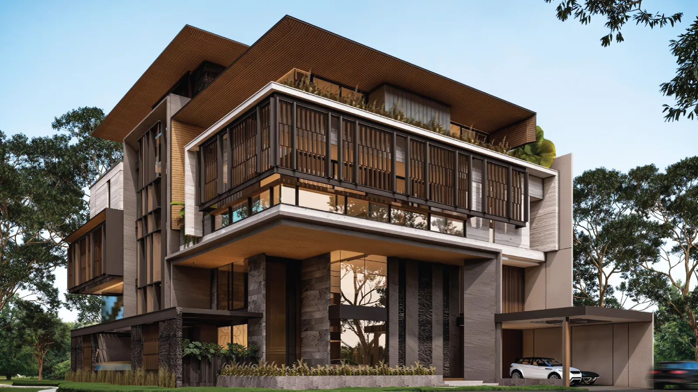
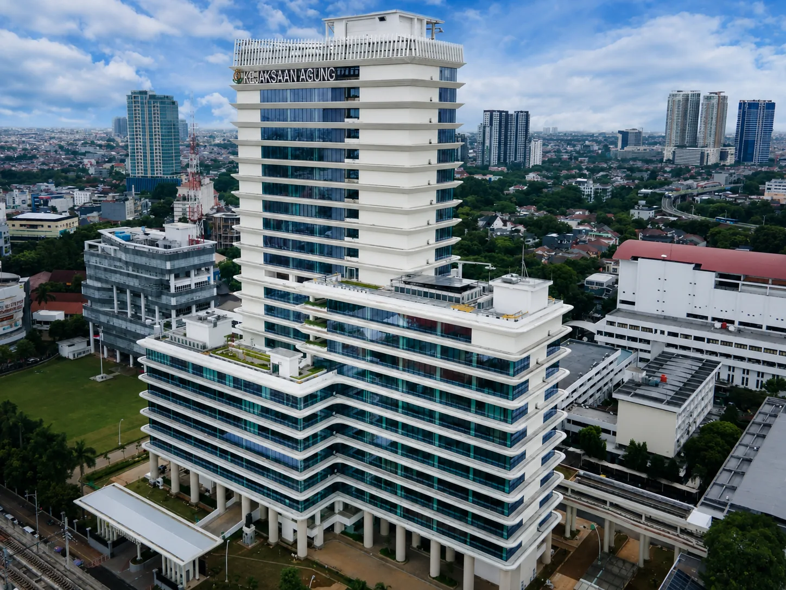
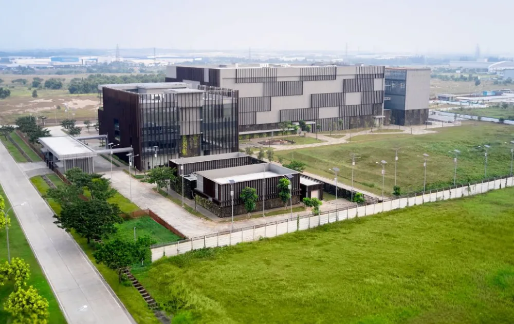

Satu kontrak, satu tanggung jawab
Struktur, arsitektur, interior, dan MEP lengkap ditangani satu tim — tidak ada celah koordinasi, tidak ada saling tunjuk antar subkontraktor.
PT. Indobangun Berjaya Konstruksi — Jakarta
Kontraktor design-build terintegrasi untuk hunian mewah dan fasilitas komersial nasional. Struktur, arsitektur, dan MEP lengkap — satu kontrak, satu tanggung jawab.
Mengapa IBK
Kebanyakan kontraktor membangun sesuai standar minimum. Kami memilih setiap material dari dampaknya terhadap biaya kepemilikan 20 tahun ke depan — lalu menuliskannya dalam satu kontrak.
Struktur, arsitektur, interior, dan MEP lengkap ditangani satu tim — tidak ada celah koordinasi, tidak ada saling tunjuk antar subkontraktor.
Beton K-400, baja TS-420, panel WPC — dipilih dari data ketahanan iklim tropis, bukan dari katalog termurah. Setiap pilihan material bisa dipertanggungjawabkan.
Pengecatan ulang tiap 3–5 tahun, kerusakan rayap, dan retak dinding — kami hilangkan dari persamaan sejak fase desain.
Portofolio
Dari hunian premium PIK2 sampai hyperscale data center — setiap lembar gambar berakhir sebagai bangunan yang diserahterimakan.

Design-build penuh — struktur, arsitektur & MEP bersama Beta Design Studio.

Hotel merek internasional — fire suppression, elektrikal & HVAC.

Kantor pemerintah — bersama PT PP (Persero).

Pusat data — lingkungan teknis paling menuntut.
Lingkup Pekerjaan
Seperti set gambar kerja: setiap disiplin punya lembarnya sendiri, dan semuanya kami kerjakan sendiri.
Mulai — LBR K-01
Respons di hari yang sama pada jam kerja. Konsultasi awal tidak dikenakan biaya.